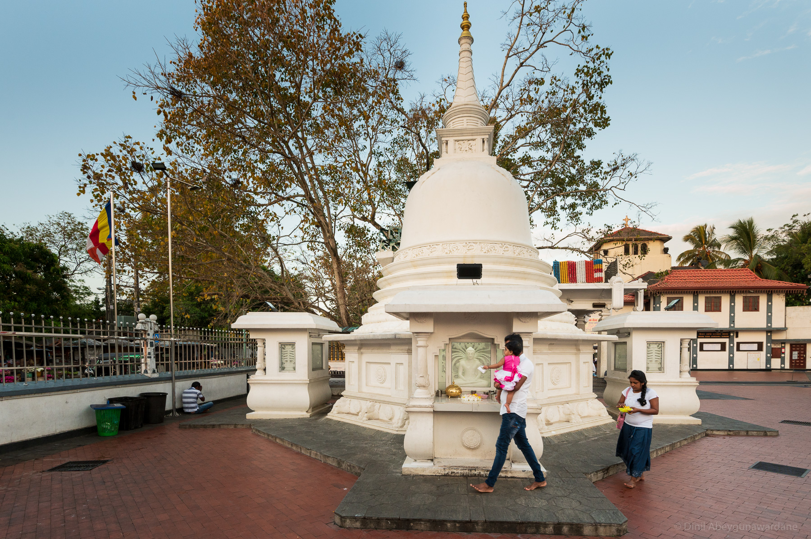

About Matara Bodhiya

Matara Bodhiya is a sacred fig tree in Matara, Sri Lanka.
Its origin can be traced back to a tragic story centred on King Kumara Dharmasena or
Kumaradhatusena son of King Kasyapa of Sigiriya and his closet friend, Kalidasa,
a famous dramatist and poet.
The Matara Bodhiya is not only a place of religious devotion but also an architectural marvel.
The main stupa (dagoba) at the site is an impressive structure, standing tall and
commanding attention. Its intricate designs and the meticulous craftsmanship reflect
the rich cultural heritage of Sri Lanka.
Visitors to the Matara Bodhiya can experience the blending of spirituality, history, and
natural beauty.The site attracts both locals and tourists alike, offering a glimpse into the
religious traditions and cultural heritage of Sri Lanka. It provides a unique opportunity
to immerse oneself in the peaceful ambiance and find solace in the presence of the
sacred bodhi tree.